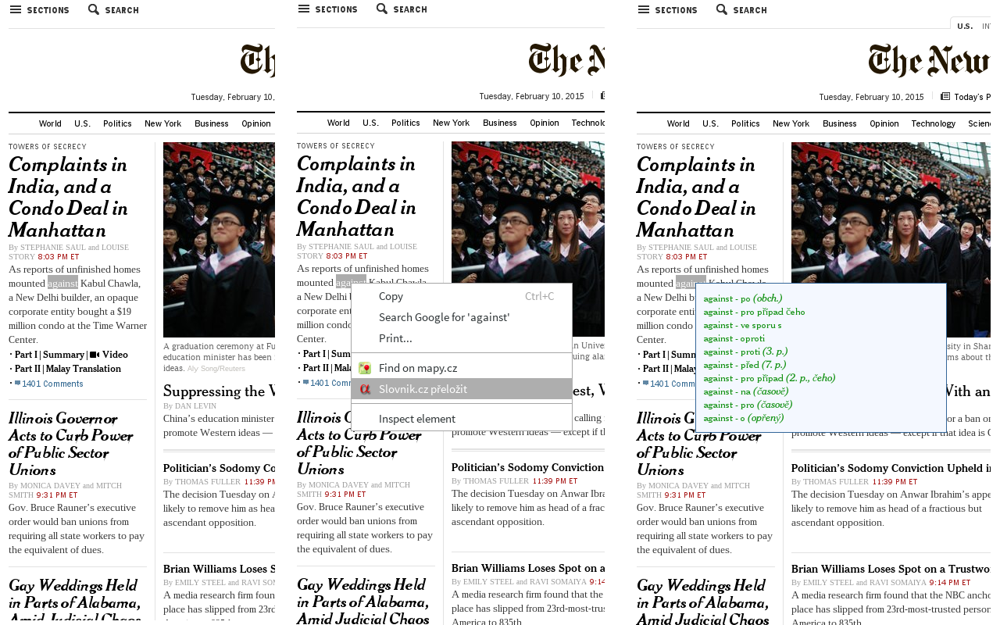

Jednoduché rozšíření pro překládání slov pomocí serveru slovnik.cz
Chorme-ext-slovnikcz je jednoduché rozšíření kontextového menu prohlížeče Chrome, které zkusí přeložit vybrané slovo pomocí serveru http://www.slovnik.cz/. Vyskočí malý dialog s překladem, který lze zrušit buď kliknutím kamkoli ve stránce nebo stiskem klávesy escape.
Pro všechny kterým lištička od seznamu nevyhovuje.
V současné chvíli podporuje jen překlad z angličtiny do češtiny!
Ostatní slovníky a případná další nastavení jsou v plánu.
Nejlepé si rozšíření nainstalujte přímo z chrome webstoru nebo případně ze zdrojových textů, viz odkaz výše.
Prosím pro hlašení chyb, návrhů nebo čehokoli dalšího použijte chrome webstore podporu nebo přímo github issues.
